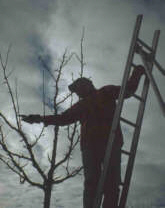

Schönes Dorf Mindersbach
Schönes Dorf MindersbachVereinsgeschichte
Im Sommer 1973 schlossen sich Mindersbacherinnen und Mindersbacher zusammen, als der Ausbau der Ortsdurchfahrt bevorstand. Ihr Anliegen war, Grünflächen und Bepflanzungen zu erhalten oder neu anzulegen.
Am 26. November 1973 fand die Gründungsversammlung im damaligen Schulhaus statt, dem heutigen Bürgerhaus. Die Mitglieder beschlossen dort ihre erste Satzung und präzisierten 1975 die Vereinsziele. Später ergänzten sie die Satzung um ein deutlicheres Bekenntnis zum Umweltschutz.
Obstbäume und Streuobstwiesen beschäftigen den Verein von Anfang an. Dazu gehören bis heute Kurse zur Baumpflege.
